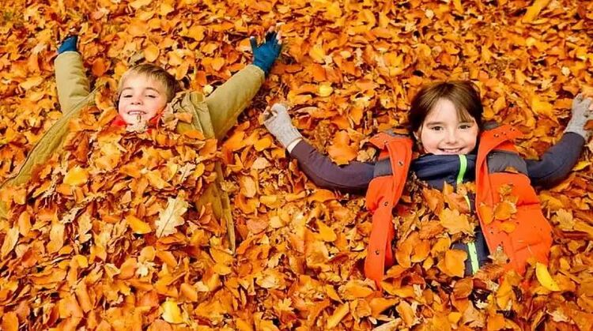
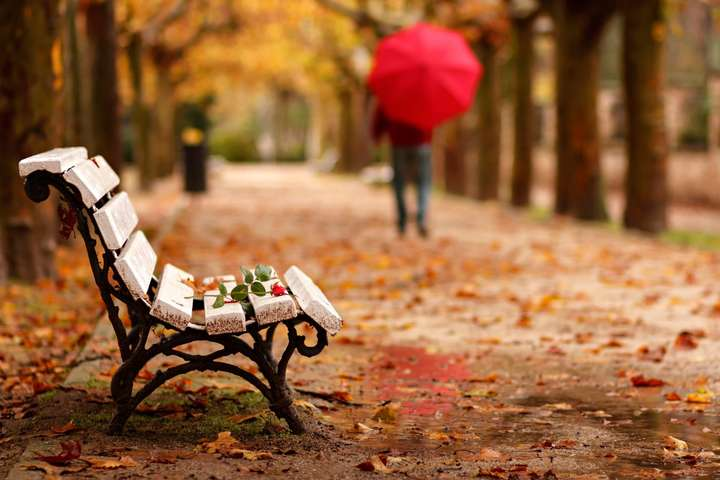
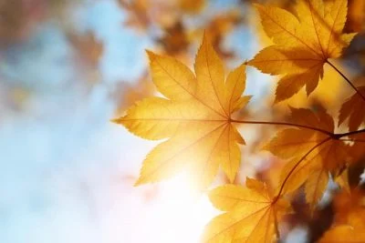

Осіннього неба прозору блакить
Не крають уже чорногузі лелеки.
Ген там, за ліском, щось шумить, гуркотить —
То гречку збирає комбайн, десь далеко.
Тут бджілок на квітах не видно ніде —
Яскраві метелики їх замінили…
Це вересень вже переможно іде,
Осіння пора набирається сили.
Ще в шатах зелених дерева стоять.
Та вже на узліссі, жовтаво-червоні,
Калини кущі й горобини горять —
Живої природи сивіючі скроні.
Природа застигла мов перед стрибком
В обійми чергової зміни сезону…
Покроєне й шите все Божим стібком —
Впиратися цьому немає резону.
автор Пилип Тихий